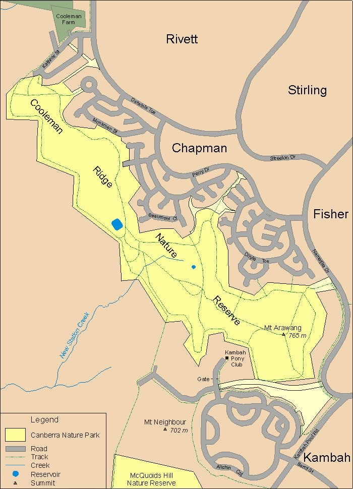

<section class="py-5">
    <div class="container">

        <br>
        <br>
        <br>

        <h2>Location</h2>


        <!--Position-->
        <p>
            Cooleman Ridge  is located in the south-western suburbs of Canberra. It is bordered by the Canberra suburbs of Chapman, Fisher and Kambah.
        </p>

        <!--Statistics-->
        <p>
            Cooleman Ridge runs in a general north-west to south-east direction. It is approximately 3.3km long on the north-west to south-west axis, and averages approximately 500m in width in the north-east to south-west direction. The average height above sea level is 600 metres and has an area of approximately 187 hectares or nearly 2 square km.
        </p>

        <!--Characteristics-->
        <p>
            Cooleman Ridge is a lowing lying ridge that is dominated by several small <a href="#!hills">hills</a> and serves as the headwaters of several <a href="#!water">creeks</a> that flow into the nearby Murrumbidge River.
        </p>

        <!-- Map  -->
        <p>
            The official map of the nature reserve can be found at <a href="http://www.environment.act.gov.au/__data/assets/pdf_file/0007/390589/cnpmapcooleman.pdf">Cooleman Ridge Nature Reserve Map</a>
        </p>

        <div align="center">
            
        </div>

    </div>
</section>